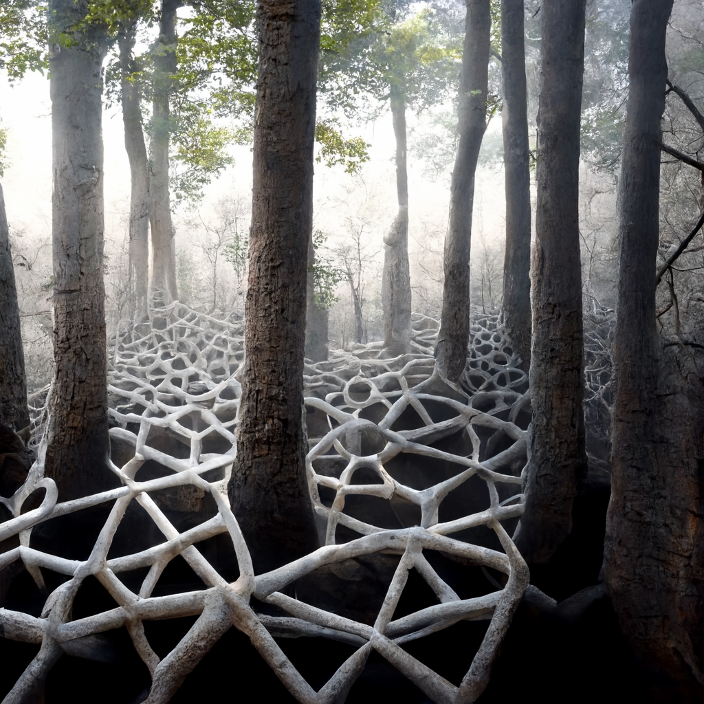
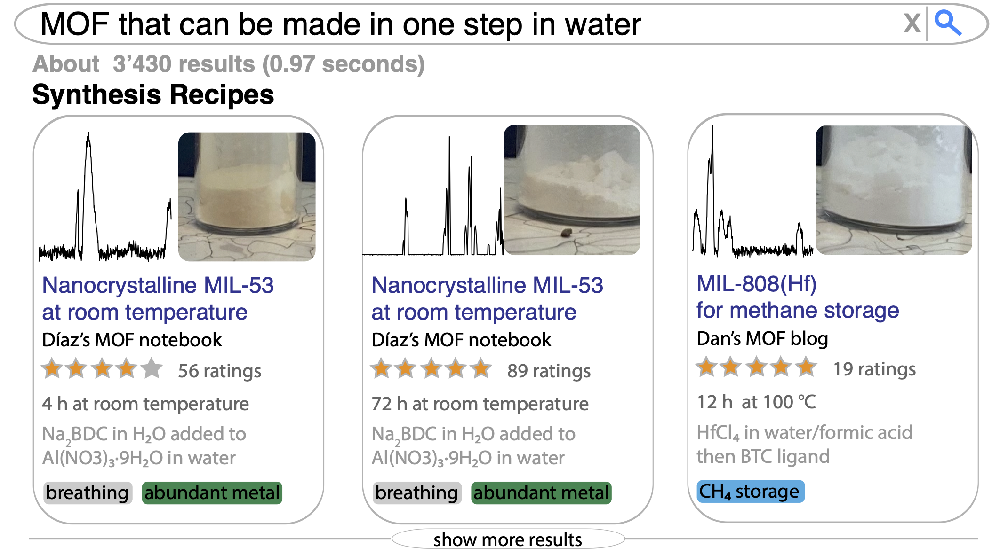

🧪 Research
My current and past research focuses on data-driven material design as well as the capture of (experimental) data in a machine-actionable form — which is pivotal to power data-driven approaches.
The central theme of my research is that material design is a very complex, mulitscale process that often involves questions that are not easily answered by simulations. Machine learning can help to address these questions and thereby accelerate material design and discovery and enable the development of new materials and yield to new insights.
Data-driven material design
For an overview of this research, see our Chem. Rev. as well as our perspective in JACS.
An ecosystem system for data-driven material design

A key challenge in data-driven material design, in particular for reticular chemistry, has been the lack of a comprehensive and open-source ecosystem for machine learning on reticular materials. To address this, we have been developing an open-source ecosystem for digital reticular chemistry, called mofdscribe. This ecosystem provides tools that accompany practioners along the entire data-driven design workflow: from data to publication. For this toolbox, we also developed and generalized a range of featurizers, i.e., methods to convert crystal structures into fixed-length vectors, which can be used to train machine learning models. For multiple featurizers, we could show that the generalization greatly improves the performance of the models.
Another exciting aspect of this work is that we have shown that it is straightforward to do machine-learning on crystallographic data incorrectly—and that this can lead to very misleading results.
You can find more details in the paper and on the open source page.
From atom to pilot plant
Given the tools and datasets mofdscribe provides of this, we can now use machine learning tools to address challenging material design problems.
Over the last years, we have been doing this from the atom scale up to the pilot plant scale:
- For instance, we have developed a machine learning model that can predict the oxidation state of metal cations in MOFs. This is interesting because oxidation states are a key part of chemical reasoning (they are even part of the names of the chemicals) but not quantum-mechanical observable. Using a chemically informed model, we could vastly outperform the state-of-the-art and show that the model reasons about the oxidation state in a way that is consistent with chemical intuition. For more details, see the paper.
- Beyond this, we have also been using machine learning to predict the color (see paper) as well as gas adsorption properties (see paper) of MOFs.
- Recently, we have shown how we can use machine learning to forecast the amine emission from a carbon capture pilot plant that is fed using a slipstream from a real power plant (see paper).
What simulation or experiment should I perform next?
The power of machine learning in material discovery is that it can help us build a map of the chemical space. Equipped with this map, we can explore the chemical space more efficiently.
Doing this for the design of materials is, however, complicated by the fact that we need to optimize multiple properties at the same time. There are often trade-offs between the properties we want to optimize, i.e., we cannot find a single optimum spot on the map, and the best we can do is to find the set of the best compromises. To avoid introducing biases in this process, we have implemented a method that allows to identify this set of best compromises (the Pareto frontier) with high confidence. You can find more information about this in our paper and an open-source implementation on GitHub.
Represenations and models of chemistry
For machine learning to work, it is important to work on actionable representations that are predictive. I think thank foundation models can help us reveal some of the tacit knowledge of chemistry.
Making data machine actionable

How can we generate an effective assistant for chemists to answer questions such as “find all MOFs that can be made in one step in a solvothermal synthesis in water?” To answer questions like these, we need data in a form that cannot only be read by a machine but also understood in order to perform actions.
In order to ensure that data is an afterthought in chemistry, I got involved in the development of an open-source ELN, the cheminfo ELN (which development is led by Luc Patiny, our perspective article gives a good overview of our vision for the development of this platform). In contrast to many other ELNs, machine-actionable data is at the core of the ELN. This enables us to perform various actions on the data directly in the browser.
Request simulations to compare experimental data with theoretical predictions
In many cases, we can only make sense of experimental data if we compare it to theoretical predictions. For instance, isotherms measure how much gas a material can adsorb as a function of pressure. Clearly, it can adsorb more if there are defects, such as missing linkers, and less if it is incompletely activated. However, to make those statements, one needs to compare to the isotherm of the “ideal” material. This is something one can do with simulations.

To make such comparisons routine — but also to create rich datasets with data from both simulations and experiments — we made it very easy to “request” simulations from within the ELN, by linking it to simulation platforms such as AiiDAlab or web services.
Create digital supporting information documents

Once data is stored in a digital and machine-actionable form, we can use it to create electronic supporting information documents with just one click. In the cheminfo ELN, we make this possible by allowing users to export all their data to Zenodo. There, the data is accessible in a machine-actionable form and can interactively be explored in the browser. You can find an example of such a supporting information document here.